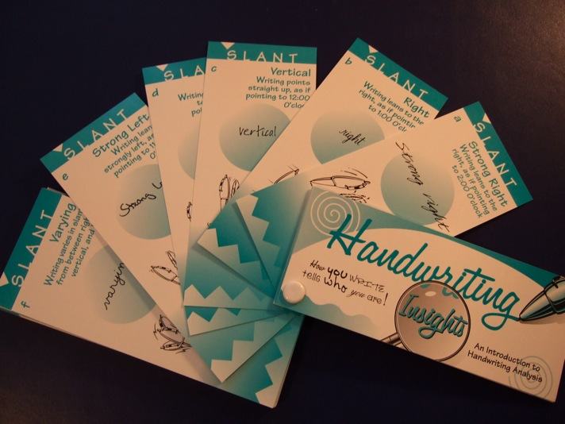
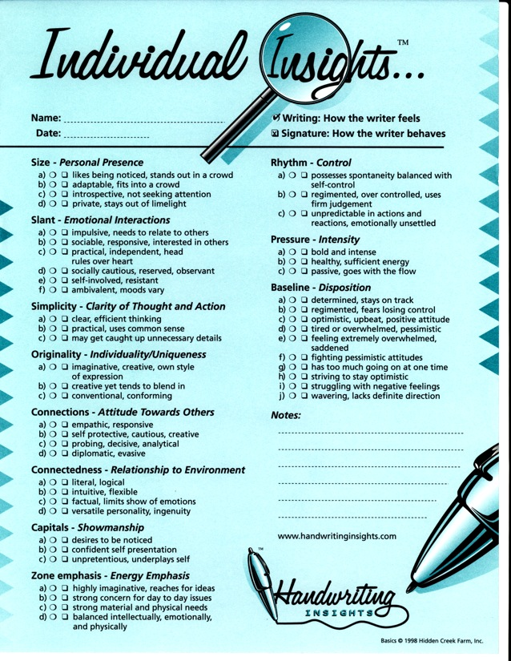
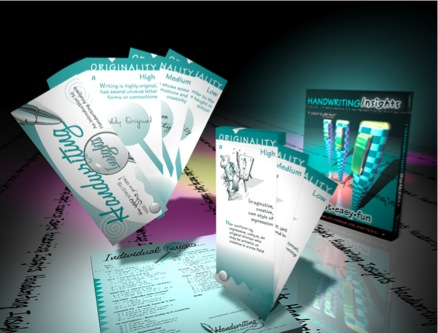

Developed by a mediator and an award winning professional
graphologist, it produces an analysis that is accurate, but
is worded constructively so that there are not hurt
feelings.
We
call it "Entertainment that's Insightful."
This
is simply the easiest way to generate a basic handwriting
analysis!
Handwriting Insights explains eleven different handwriting
traits. Each trait has three to ten variations. For
example, the trait of Slant, which represents a person's
emotional interactions, has the following six variations:
strong right, right, vertical, left, strong left, and
varied. On the front of each card is an example of that
particular variation, and a description of what to look for
in the writing.

On the back of the card is both a brief and a more detailed
explanation of what that particular writing trait means.
These explanation are descriptive, not judgmental. This
means that people will get insight into what their
handwriting is saying about their personalities without
getting their feeling hurt.
Producing an analysis is a simple as going through the
deck, seeing which of the variations most matches the
writing for each of the eleven traits, and sliding the
matching card to the side. You wind up with eleven cards,
and when you turn the deck over, there is the
analysis.

If you want a record of the analysis, you simply check of
the appropriate boxes on the Individual Insights Pad that
comes with your kit.

*****
Here is a picture of the Kit - Handwriting Insights Card
Deck, Individual Insights Pad, and a box.

Handwriting Insights is handwriting analysis with the work
removed, and the fun left in.